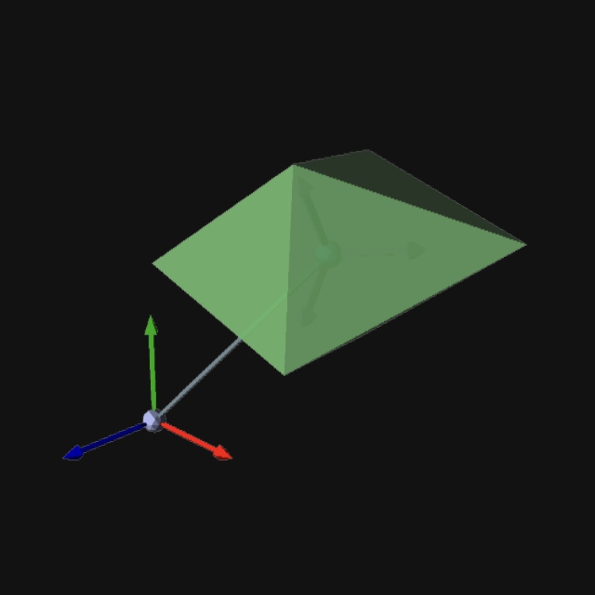

Bodies¶
Bodies are used to define the mass and inertial properties of the model. The most basic body is a Particle, which is a mass that is attached to a Point, without an inertia tensor. Basic RigidBody objects are defined, which also have mass defined at the body’s mass-center, and inertia tensors dependent on the body geometry.
{kind=link}
A particle is a mass that is fixed to a point, with no inertia tensor.

{kind=link}
A general rigid body has its center of gravity (CG) located at a user-specified point and orientation defined in a specified frame, a fixed mass, and specified inertia tensor.
{kind=link}
A rigid body box is a rectangular prism of uniform density. The box has length defined in the X-axis, width defined in the Y-axis, and height defined in the Z-axis, where (X, Y, Z) are the basis vectors of the body fixed frame.
{kind=link}
A rigid body cylinder is a circular rod of uniform density. The cylinder has length defined in the X-axis, and radius for the Y- anc Z-axes, where (X, Y, Z) are the basis vectors of the body fixed frame.
{kind=link}
A rigid body cone is a circular cone of uniform density. The cone has length defined in the X-axis, and radius for the Y- anc Z-axes, where (X, Y, Z) are the basis vectors of the body fixed frame.